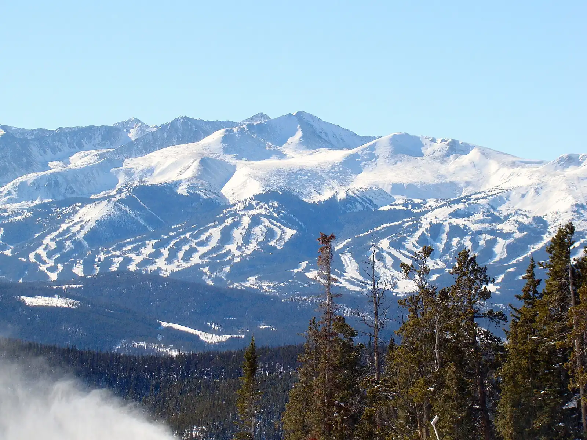

Breckenridge, Colorado · Ski conditions
Breckenridge Conditions and Webcams Today
Breckenridge's webcams and kid facts: childcare from 6 months, kids lessons from age 3, free town buses. It is 97 miles, about 1.75 hours, from Denver, the resort says.
Researched with AI (Miles Rowan) · sources linked and dated · How we check
Breckenridge's own status
Breckenridge's home page says "The Kingdom is Open!" with no opening date or lift count. For lifts open today, check its terrain and lift status page (read Nov 17).
Our webcam read
No cam read from us yet. Cam reads show here only when a recent one has passed a separate automated accuracy check.

Cam by cam
The 4 Breckenridge cam views our reader uses, in our own descriptive words (see Breckenridge's own cam page, as listed in our cam feed Nov 17): Snow stake, Lift top, Ridge view, Trail view. Once our reads start, each cam's last read time shows here.
Plan the day with kids
- Childcare: Two centers take ages 6 months to 4 years, 8:30am to 3:30pm daily: Peak 8 (Nov 21 to Apr 4) and Beaver Run (Dec 19 to Mar 28). Bring a nut-free lunch and snacks. Parents must stay in Breckenridge.
- Lessons: Kids group lessons cover ages 7 to 14, with under-7s in smaller, ability-based groups (Beaver Run checks in ages 3 to 6). Kids must be potty trained and bring a helmet (none rented or lent). Full-day kids groups include lunch when offered.
- Lesson day: Full day 9am to 3pm, half day 9 to 11:30am. Check in 30 minutes early at Peak 8 (top of the BreckConnect Gondola), Peak 9 Village or Beaver Run; arrive 60 minutes early if picking up rentals.
- Lift hours: Chairlifts 9am to 4pm; the BreckConnect Gondola 8:30am to 5pm (last ride up 4:30pm). High-alpine lift times vary with conditions and weather.
- Lift tickets: Lessons don't include a lift ticket; every lesson rider needs a pass or ticket. Breckenridge's ticket page doesn't allow automated reading, so we show no ticket prices; its home page says buying weeks ahead saves the most.
- Cancel and weather: Lessons: full refund 48 hours or more ahead, 50% charge inside 48 hours; not canceled for weather while the resort runs. Childcare: under 48 hours' notice is charged a full day per child.
Childcare prices on Breckenridge's pages, read Nov 17:
- Infant care (6 to 24 months), Peak 8 or Beaver Run: $250 booked ahead, $265 walk-up (off-peak); $260 / $275 (peak)
- PreK care (2 to 4 years), Peak 8: $235 booked ahead, $250 walk-up (off-peak); $245 / $255 (peak)
- PreK care (2 to 4 years), Beaver Run: $235 booked ahead, $245 walk-up (off-peak); $250 / $255 (peak)
Childcare rates as listed on Breckenridge's childcare page, which doesn't print a unit; its cancellation terms charge a "full day program charge per child", so read them as per child per day. The page doesn't say which dates are peak. Lesson and lift ticket prices are not on the pages we could read.
Lift tickets and lessons: Breckenridge's pages we could read show childcare rates but no lift ticket or lesson prices, so we can't sum a family-of-4 day; check live. See Breckenridge lift tickets.
From Breckenridge home page, Breckenridge childcare, Breckenridge lessons: arrival and preparation, Breckenridge home page, Breckenridge ski and ride lessons: first timers, Breckenridge childcare, Breckenridge parking and directions and Breckenridge hours, read Nov 17.
Getting there from Denver
- Car: I-70 west to exit 203 at Frisco, then CO-9 south into Breckenridge. The resort lists 97 miles and about 1.75 hours from Denver, and 104 miles from Denver International Airport.
- Airport shuttle: Epic Mountain Express runs scheduled shuttles from Denver International Airport.
- Parking: paid lots in town by the BreckConnect Gondola (South Gondola Parking Structure, North Gondola, Gold Rush), plus Stables and Beaver Run; reserving through Breck Park is optional and costs extra. The page lists no rates. Free: Ice Rink Lot and McCain Dr. Lot (winter), with free buses.
- Buses: Breck Free Ride is free every day, 6:15am to 11:15pm; the free Summit Stage links the county. BreckConnect Gondola: 170 Watson Ave, Breckenridge, CO.
If the snow is thin
- Lessons are not canceled for weather while the resort runs; cancel 48 hours or more ahead for a full refund.
- Childcare cancellations need 48 hours' notice (call by 8:30am two days before), or a full day is charged per child.
- We didn't find a weather refund policy for lift tickets on the pages we read; check before you buy.
From Breckenridge ski and ride lessons: first timers and Breckenridge childcare, read Nov 17.
How we read the cams: a program looks at Breckenridge's public webcam pictures and notes only what a picture can show: fresh snow, snow cover, snowmaking, moving lifts, how busy the base looks, visibility and the snow stake. Each read shows its time; after 90 minutes it is marked older, after 6 hours it is hidden. We never say whether terrain is safe, icy, groomed or open; Breckenridge's own report decides that. We don't show the cam pictures or count people.
Sources: Breckenridge mountain cams · Breckenridge hours · Breckenridge ski and ride lessons: first timers · Breckenridge childcare · Breckenridge parking and directions · Breckenridge home page · Breckenridge childcare · Breckenridge lessons: arrival and preparation · Breckenridge home page (read Nov 17). We haven't skied Breckenridge.